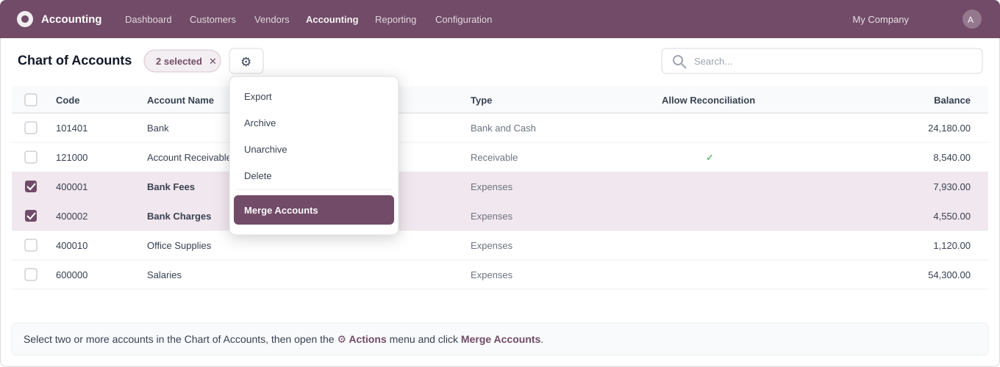
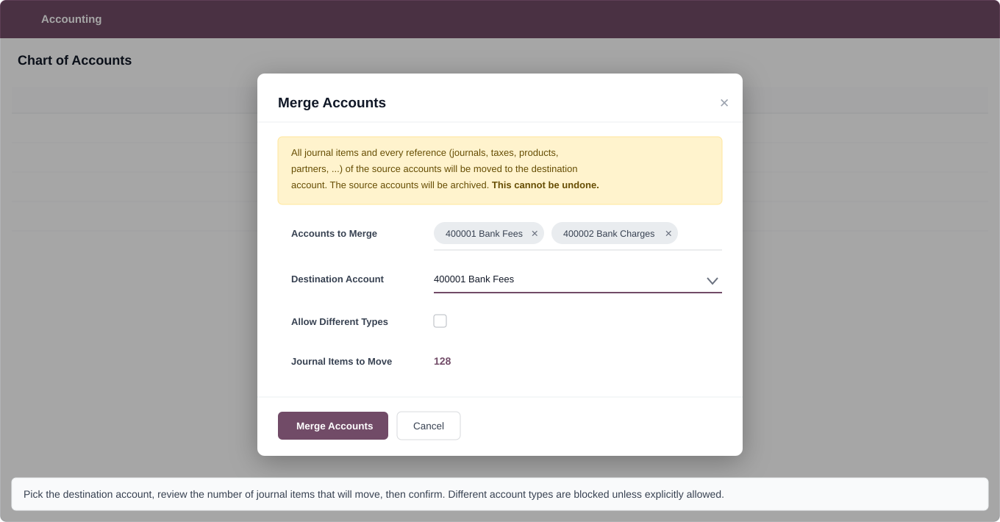
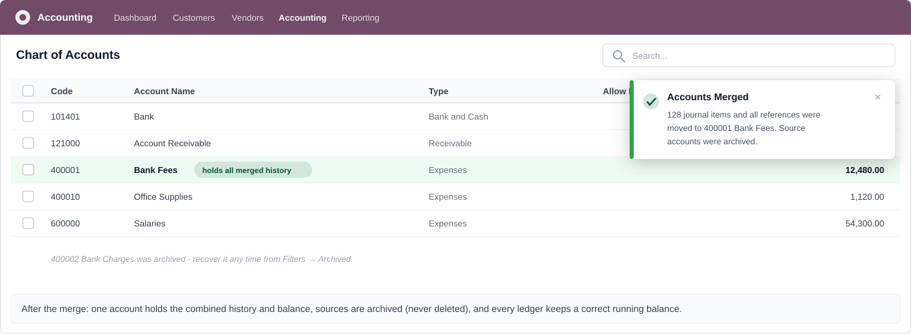

Merge two or more General Ledger accounts into one — exactly like the native Contacts merge, but for your Chart of Accounts.
Odoo 17 Odoo 18 Odoo 19 Community & Enterprise LGPL-3
Duplicated accounts pile up after imports, migrations or years of bookkeeping: "Bank Fees" here, "Bank Charges" there — same purpose, split history. MS Account Merge adds a Merge Accounts action to the Chart of Accounts that moves all journal items and every database reference of the source accounts to one destination account, then archives the empty sources. Your General Ledger shows one combined account with movements naturally ordered by date and a correct running balance — as if the duplicates never existed.
Open Accounting → Configuration → Chart of Accounts, tick two or more accounts, then click ⚙ Actions → Merge Accounts. The action is only visible to users in the Accounting Administrator group.

The wizard shows the selected accounts, lets you choose the destination account (it must be one of the selection) and displays how many journal items will move. Accounts of different types are blocked unless you explicitly tick Allow Different Types. A final confirmation dialog protects against misclicks.

After the merge, the destination account holds the combined balance and complete history. The source accounts are archived, never deleted, so the operation leaves no dangling records and archived accounts remain visible under Filters → Archived.

|
🔁 Everything is repointed A generic foreign-key scan (the same technique as the native partner merge) redirects every reference in the database: journal items, journal default accounts, taxes, products, reconciliation models, fiscal positions, assets — including columns added by third-party modules. |
🏢 Company-dependent fields covered Partner receivable/payable accounts and product income/expense accounts are stored per company (jsonb on Odoo 18/19, ir.property on Odoo 17). The module rewrites both storage
formats, so no per-company setting is left behind.
|
|
📊 Clean ledgers, correct balances Because journal items are moved (not copied or netted), the General Ledger and Partner Ledger show one account whose movements are naturally ordered by date with a correct running balance. |
🔒 Reconciliation-safe If any source account allows reconciliation, the destination is made reconcilable automatically, so existing full and partial reconciliations remain valid after the merge. |
|
🗃 Archive, never delete Source accounts are archived ( active = False on 18/19, deprecated on 17),
keeping the chart clean while staying reversible from the Archived filter.
|
🧭 One codebase, three versions The same module installs unchanged on Odoo 17, 18 and 19 — version differences are detected at runtime, no separate branches to maintain. |
account.group_account_manager.The module adapts automatically to the running version:
| Mechanism | Odoo 17 | Odoo 18 / 19 |
|---|---|---|
| Company-dependent values partner & product default accounts |
ir.property references are rewritten |
jsonb columns are rewritten per company |
| Archiving the sources | deprecated flag |
active flag |
| Company scope check | single company_id |
multi-company company_ids |
| Action group restriction | applied at install time with whichever field the version uses
(groups_id up to 18, group_ids since 19) |
|
Can I undo a merge?
The merge itself is not reversible — journal items are physically repointed. That is why the wizard warns twice before running. The source accounts, however, are only archived and can be unarchived at any time. Take a database backup before merging large accounts.
Why is my merge refused with a message about hashed entries?
Some localizations hash posted entries to make them legally inalterable. Moving such journal items would break the hash chain, so the module blocks the merge instead of corrupting your audit trail.
Does it work with third-party modules that reference accounts?
Yes. The foreign-key scan works at the PostgreSQL level, so any
module whose tables have a foreign key to account_account is repointed
automatically — no per-module code needed.
Does it support multi-company databases?
Yes. All selected accounts must share the same company scope, and per-company default account settings are rewritten for every company.
MohamedSaied — we are happy to assist with installation, migrations and custom accounting workflows.
💬 Contact us on WhatsApp